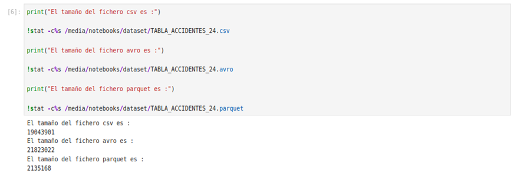

Ejercicio resuelto 5: Comparativa de los formatos Avro y Parquet
Una vez descritos los formatos Apache Avro y Apache Parquet, y tras analizar los ficheros generados durante los ejercicios anteriores, es posible establecer una comparación de sus principales características y de su comportamiento dentro del ecosistema Hadoop utilizado en este proyecto.
En el contexto de este proyecto, ambos formatos almacenan la misma información correspondiente a los accidentes de tráfico. Sin embargo, presentan diferencias significativas en cuanto a su organización interna, consumo de almacenamiento y comportamiento durante el procesamiento mediante Apache Hadoop MapReduce.
Objetivo del ejercicio
El objetivo es comparar experimentalmente los formatos Avro y Parquet, analizando especialmente el espacio de almacenamiento requerido y las implicaciones que presenta cada formato durante el procesamiento distribuido.
- Comparar la organización de los datos en Avro y Parquet.
- Analizar el tamaño de los ficheros generados.
- Estudiar el impacto del almacenamiento en HDFS.
- Analizar las operaciones de entrada/salida realizadas durante MapReduce.
- Determinar qué formato resulta más adecuado para el almacenamiento y análisis de los datos del proyecto.
1. Diferencias en el acceso a los datos
Una de las principales diferencias entre ambos formatos se encuentra en la forma en que los datos son organizados y posteriormente recuperados durante los procesos de análisis.
Al trabajar con Avro, las tareas de MapReduce leen los registros de acuerdo con la estructura definida por el esquema. Cuando una operación necesita determinados campos, el acceso se realiza sobre los registros almacenados.
Por el contrario, Parquet organiza la información por columnas. Esta característica permite que una consulta pueda acceder únicamente a las columnas requeridas por el algoritmo, evitando la lectura de información que no resulta necesaria para la operación.
2. Impacto en las operaciones de entrada/salida
La organización columnar de Parquet tiene una consecuencia directa sobre las operaciones de entrada/salida (E/S) realizadas durante el procesamiento distribuido.
Cuando un algoritmo de MapReduce necesita únicamente un subconjunto de las variables disponibles, Parquet puede leer únicamente las columnas requeridas. Esto reduce la cantidad de información que debe ser transferida desde el sistema de almacenamiento hacia los procesos encargados del cálculo.
En consecuencia, al reducirse el volumen de datos leído desde HDFS y transferido entre los diferentes nodos del clúster, también puede disminuir el coste asociado a las operaciones de entrada/salida.
Comparación del acceso
Avro: acceso orientado a registros completos.
Parquet: acceso selectivo a las columnas necesarias.
3. Comparación del tamaño de los ficheros
Una vez generados los ficheros equivalentes en los formatos Avro y Parquet, se realizó una comparación de su tamaño en almacenamiento.
Los resultados obtenidos muestran una diferencia considerable entre ambos formatos. El fichero Avro presenta un tamaño de 20,8 MB, mientras que el fichero equivalente en formato Parquet ocupa únicamente 2,0 MB.
| Formato | Tamaño del fichero | Diferencia |
|---|---|---|
| Avro | 20,8 MB | - |
| Parquet | 2,0 MB | Reducción aproximada del 90 % |
4. Impacto del factor de replicación de HDFS
La diferencia de tamaño también tiene un impacto directo sobre el espacio físico utilizado en el clúster Hadoop cuando los ficheros son almacenados en HDFS.
En el escenario analizado se utiliza el factor de replicación configurado por defecto, correspondiente a tres copias de cada bloque almacenado.
| Formato | Tamaño original | Factor de replicación | Espacio aproximado en HDFS |
|---|---|---|---|
| Avro | 20,8 MB | 3 | 62,4 MB |
| Parquet | 2,0 MB | 3 | 6,1 MB |
Estos resultados muestran que la reducción conseguida mediante Parquet no solo afecta al tamaño lógico del fichero, sino que también se traslada al espacio físico requerido en el sistema distribuido. Por tanto, la utilización de un formato más compacto permite optimizar el uso de los recursos de almacenamiento disponibles en el clúster.
5. Impacto sobre el procesamiento MapReduce
Desde el punto de vista del procesamiento mediante Apache Hadoop MapReduce, el menor tamaño de los archivos Parquet implica una reducción del volumen de información que debe ser leído desde HDFS.
Además, su organización columnar permite seleccionar las variables necesarias para una determinada operación. De este modo, cuando un algoritmo no necesita todas las columnas del conjunto de datos, puede evitarse la lectura de información innecesaria.
Esta reducción del volumen de datos procesados puede contribuir a disminuir las operaciones de entrada/salida y la cantidad de información que debe ser transferida entre los nodos del clúster.
Conclusiones de la comparativa
La comparación realizada permite identificar diferencias significativas entre ambos formatos en relación con el almacenamiento y el procesamiento de los datos.
- Avro presenta un tamaño de 20,8 MB para el conjunto de datos analizado.
- Parquet ocupa únicamente 2,0 MB, lo que supone una reducción aproximada del 90 %.
- Considerando tres réplicas en HDFS, Avro requiere aproximadamente 62,4 MB, mientras que Parquet requiere aproximadamente 6,1 MB.
- La organización columnar de Parquet permite reducir la cantidad de información que debe ser leída cuando solo se necesitan determinadas columnas.
- La reducción del volumen de datos puede disminuir las operaciones de entrada/salida y la transferencia de información entre los nodos del clúster.
6. Evidencia de los resultados obtenidos
La siguiente figura recoge la evidencia correspondiente a la comparación realizada y resume los principales resultados obtenidos durante el ejercicio.

Figura 48. Conclusiones de la comparación entre los formatos Avro y Parquet. Fuente: elaboración propia.
Resultado y conclusión final
Los resultados obtenidos en este proyecto demuestran que Parquet es el formato más eficiente para el almacenamiento y análisis de los datos de accidentes cuando se prioriza la reducción del espacio ocupado y la optimización del acceso a las columnas necesarias.
La reducción aproximada del 90 % observada en el tamaño del fichero tiene una repercusión directa sobre el almacenamiento utilizado en HDFS y, potencialmente, sobre el volumen de datos que debe ser leído y transferido durante los trabajos distribuidos.
Por su parte, Avro continúa siendo una alternativa adecuada para escenarios en los que resulta especialmente importante el intercambio de datos, la serialización de registros completos o la utilización de un esquema flexible.
Por tanto, la elección del formato depende de las características del proceso que se pretenda realizar. Para el escenario de análisis de grandes volúmenes de datos planteado en este proyecto, los resultados experimentales obtenidos justifican la utilización de Parquet como formato especialmente adecuado para las tareas analíticas.